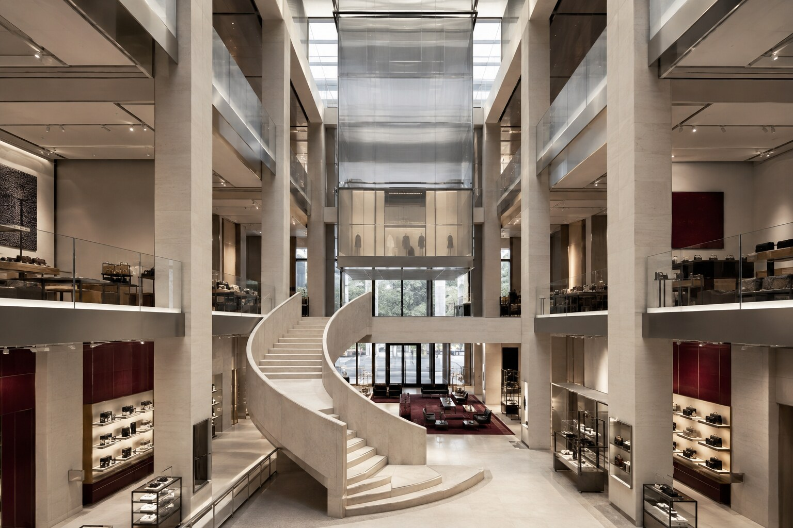

SELECTED COMMERCIAL / 08
더 아카이브THE ARCHIVE FLAGSHIP
리테일과 전시, 프라이빗 서비스를 한 건물에 담은 글로벌 플래그십.
VIEW PROJECT08PROJECT OVERVIEW
판매 공간을 도시의 문화 장면으로 확장하다.
밝은 석회석의 수직 프레임과 새틴 스테인리스, 반투명 유리의 가벼움을 대비시키고 짙은 옥스블러드 컬러를 시그니처로 사용했습니다. 중앙 아트리움과 조형 계단이 세 개 층의 리테일과 전시 경험을 연결합니다.
PROJECT GALLERY
공간의 장면들